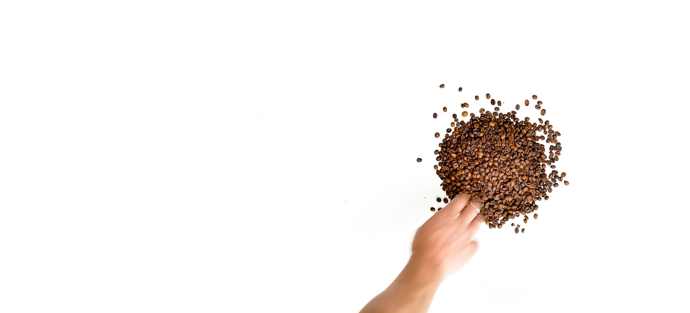

Three roasts, sent every two weeks
Whole beans or ground for your brewer, roasted on Monday and posted on Tuesday. 250 g from €9.50; skip or pause any delivery.

Dark: SumatraCocoa and cedar. For espresso and milk.
Medium: Cerrado, BrazilHazelnut and caramel. For a cafetière or a moka pot.
Light: Huila, ColombiaOrange and honey. For filter and pour-over.
Roasted on Monday. In your letterbox by Thursday, in a bag that fits through it.
- Dark, SumatraCocoa, cedar€9.50
- Medium, CerradoHazelnut, caramel€9.50
- Light, HuilaOrange, honey€10.50
- PostageFree from two bags€2.90
